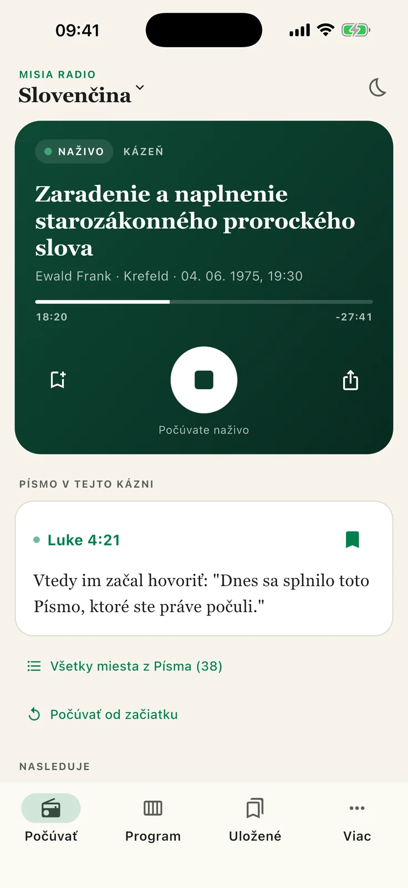
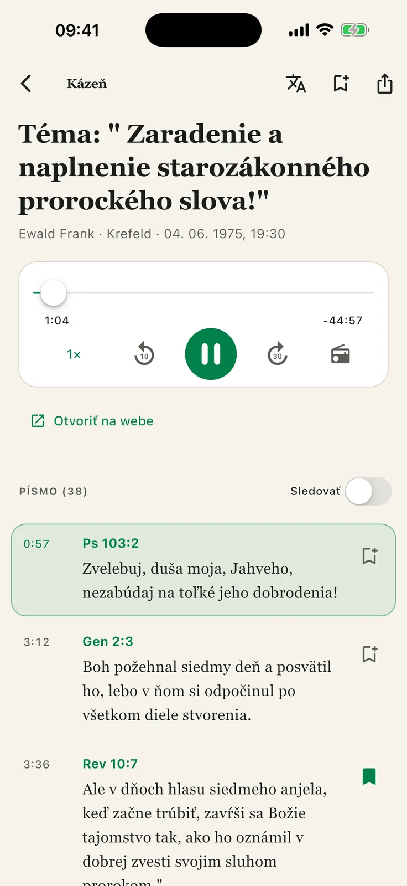
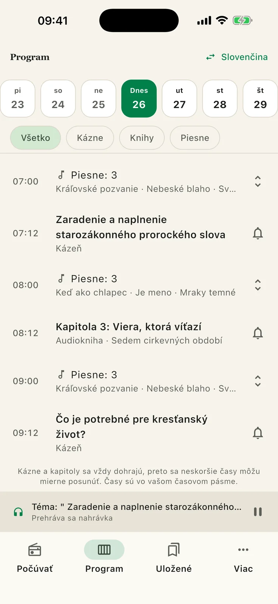

Misia Rádio
Internetové rádio Misie jedným ťuknutím. Počas kázne sa miesta z Písma zobrazujú práve vtedy, keď zaznejú; piesne majú text a audioknihy odkaz na knihu. Program na týždeň aj to, čo už odznelo, pripomienky, uložené miesta z Písma a kázne od začiatku. Bez prihlásenia a bez reklamy.
Android APK
Aktuálna verzia: 1.0.0 (4) · 26. 10. 2026, 18:45
Android 7.0 a novší. Pri inštalácii APK povoľte „Inštalovať z neznámych zdrojov“. Povolenie na upozornenia sa vyžiada, len ak si nastavíte pripomienku.
Uzavreté testovanie v Google Play
Google Play: uzavreté testovanie. Najprv sa pridajte do skupiny testerov s rovnakým účtom Google, aký používate v Google Play. Potom otvorte odkaz na testovanie a prihláste sa do testu. Verejné vydanie sa pripravuje.
Snímky obrazovky





